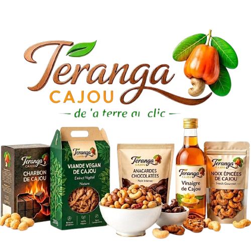

De la terre
au clic, sans rien perdre.
Teranga Cajou transforme localement la noix, la pomme et la coque du cajou de Casamance en cinq gammes premium. Une filière courte, maîtrisée du planteur à la livraison, qui garde la valeur au Sénégal.
5
gammes zéro déchet
100%
origine Casamance
24 h
réponse aux devis

// Gamme 2026
Ziguinchor · Sédhiou · Kolda
55%
du cajou mondial
vient d'Afrique
vient d'Afrique